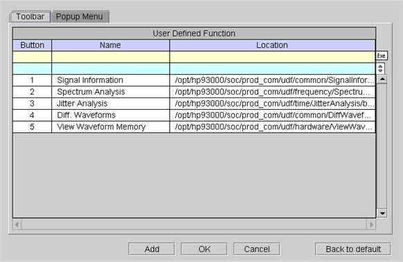
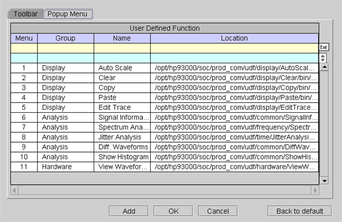
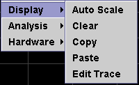
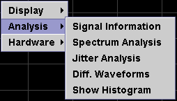
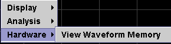

Assign User Defined Function
A User Defined Function (UDF) can either be assigned to the User Defined Panel toolbar or to a shortcut menu in the graph of the Waveform Graphs Tool. The User Defined Function dialog box is used to assign the UDF. This dialog box can be opened from the Menu Bar.
The following screen shows how to assign a UDF to the toolbar using the Toolbar tab in the User Defined Function dialog box.


The following screen shows how to assign a UDF to a shortcut menu using the Shortcut Menu tab in the User Defined Function dialog box. After assignment, right-clicking in the graph causes the shortcut menu to appear.




Functional changes
- Introduced before SmarTest 6.3.2